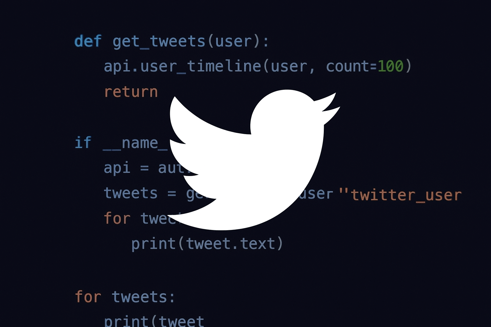
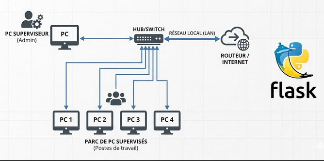
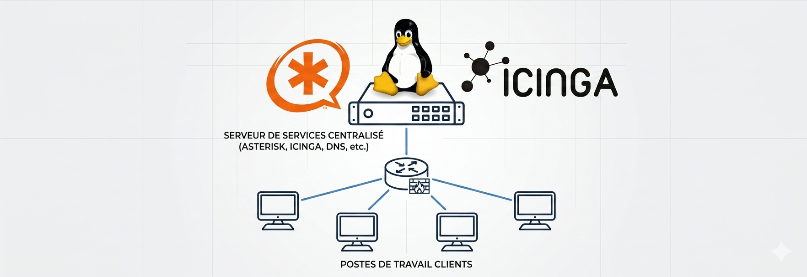
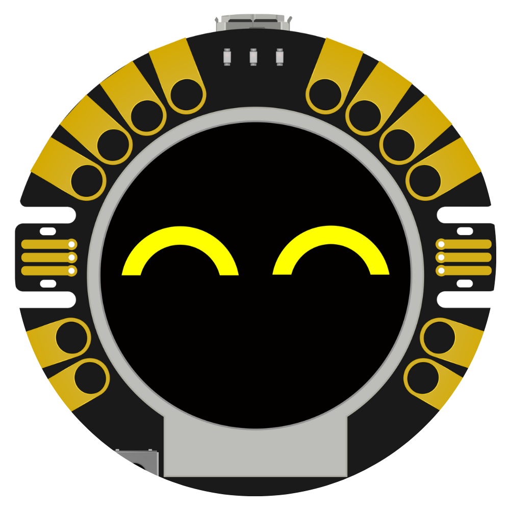
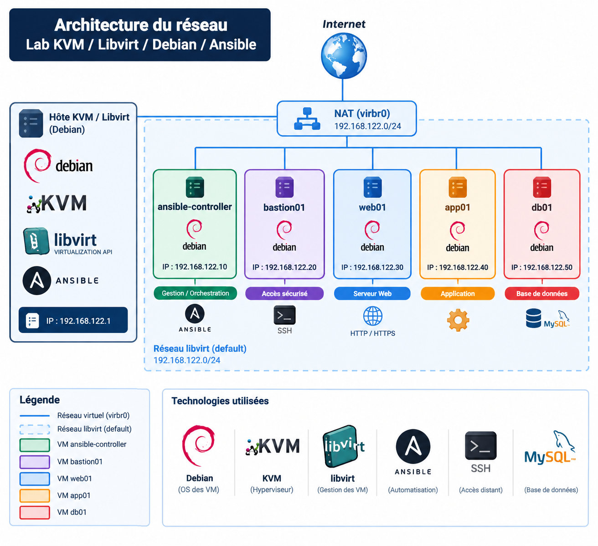

Ruche Connectée Connected Beehive
Système IoT avec Arduino, capteurs multiples et application Android pour surveillance en temps réel. IoT system with Arduino, multiple sensors and Android app for real-time monitoring.
Découvrez mes réalisations académiques et personnelles dans les domaines des réseaux, de la cybersécurité et du développement. Discover my academic and personal achievements in networking, cybersecurity and development.
Système IoT avec Arduino, capteurs multiples et application Android pour surveillance en temps réel. IoT system with Arduino, multiple sensors and Android app for real-time monitoring.

Collecte, nettoyage et analyse de tweets pour identifier les tendances temporelles. Collection, cleaning and analysis of tweets to identify temporal trends.

Découverte des vulnérabilités courantes et utilisation d'outils de pentesting. Discovery of common vulnerabilities and use of pentesting tools.

Système de vision par ordinateur pour détecter les intrusions et vérifier les équipements de sécurité. Computer vision system to detect intrusions and verify safety equipment.

Application web tout-en-un, développée en Python, pour superviser un serveur DHCP et l'ensemble du parc machines à distance. All-in-one Python web application to supervise a DHCP server and the whole machine fleet remotely.

Conception et déploiement d'un réseau d'entreprise complet : services réseau, base de données, supervision et téléphonie sur IP. Designing and deploying a full enterprise network: core services, database, monitoring and VoIP telephony.

Stage de fin de 2ᵉ année au LAB d'Aix : développement BLE sur la carte STeaMi, système de localisation par trilatération, portage C++ et ressources pédagogiques. End-of-second-year internship at LAB Aix: BLE development on the STeaMi board, a trilateration positioning system, C++ porting and educational resources.

Infrastructure virtualisée (KVM/Libvirt) avec réseau isolé par topologie, déploiement automatisé via Ansible, accès SSH centralisé et audité avec Teleport, et sortie Internet contrôlée via un proxy. Virtualised infrastructure (KVM/Libvirt) with a topology-based isolated network, automated deployment via Ansible, centralised and audited SSH access with Teleport, and controlled outbound internet through a proxy.
Système IoT complet avec Arduino, capteurs et application Android pour surveiller les ruches en temps réel. Complete IoT system with Arduino, sensors and Android app to monitor beehives in real-time.
Dans le cadre de notre projet de fin d'année au lycée, nous avons répondu à une problématique réelle rencontrée par un apiculteur local : réduire les déplacements sur son site et améliorer l'efficacité de la surveillance de ses ruches. Pour cela, nous avons conçu et déployé une ruche connectée totalement adaptée à une utilisation sur le terrain.
As part of our final year project in high school, we addressed a real issue faced by a local beekeeper: reducing travel to his site and improving efficiency in monitoring his hives. To achieve this, we designed and deployed a connected beehive fully adapted for field use.
Le dispositif embarqué repose sur une carte Arduino couplée à plusieurs capteurs intelligents :
The embedded system is based on an Arduino board connected to several smart sensors:
Ces données, récoltées en temps réel, étaient transmises via une connexion LTE vers une application Android que nous avons développée. Nous avons utilisé le protocole léger MQTT avec le broker Mosquitto pour une communication rapide et fiable avec l'application.
These real-time data were transmitted via an LTE connection to a custom Android application we developed. We used the lightweight MQTT protocol with the Mosquitto broker for fast and reliable communication with the app.
Capture The Flag pour découvrir les failles de sécurité les plus récurrentes et apprendre à les exploiter de manière éthique. Capture The Flag to discover the most common security flaws and learn to exploit them ethically.
Le but de cette SAE était de nous introduire aux risques potentiels liés à l'informatique et plus spécifiquement aux systèmes d'information. Notre professeur de Réseaux nous a concocté un Capture The Flag pour découvrir les failles de sécurité les plus récurrentes dans le monde réel.
The goal of this SAE was to introduce us to potential risks related to computing and more specifically to information systems. Our Networks teacher created a Capture The Flag to discover the most common security flaws in the real world.
Le CTF nous a permis d'explorer différentes catégories de vulnérabilités :
The CTF allowed us to explore different categories of vulnerabilities:
Nous avons utilisé plusieurs outils professionnels de pentesting pour mener ce CTF à bien :
We used several professional pentesting tools to complete this CTF:
Système de vision par ordinateur pour détecter les silhouettes humaines et vérifier le port d'équipements de sécurité. Computer vision system to detect human silhouettes and verify safety equipment wear.
Ce projet porte sur la vision par ordinateur pour la détection de silhouettes humaines et la gestion d'alertes de sécurité. L'objectif principal n'était pas la reconnaissance faciale complète, mais de détecter la présence d'une silhouette et de vérifier si elle porte un gilet jaune (personnel autorisé). Si une silhouette sans gilet jaune est détectée, une intrusion est signalée.
This project focuses on computer vision for human silhouette detection and security alert management. The main goal was not full facial recognition, but to detect a silhouette's presence and check whether it wears a yellow safety vest (authorized staff). If a silhouette without a yellow vest is detected, an intrusion is reported.